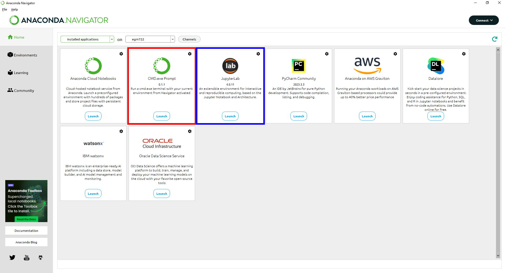
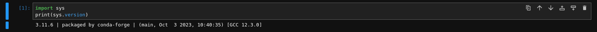

intro to python#
To get started in the world of programming using python, we will use Jupyter Notebooks within a JupyterLab environment, which provide a way for creating and sharing documents that have interactive code snippets alongside narrative text, images, and more.
getting started#
Warning
Make sure that you have installed all of the preliminary steps before continuing - you should already have installed Anaconda and git.
You should also have forked the course repository and cloned it to your computer. If any of these steps sound unfamiliar, stop now and go back over the setup instructions.
To start, open Anaconda Navigator, make sure that you are on the Home tab, and select the egm722 environment
created during the preliminary setup from the second menu at the top of the window (to the right of “on”).
You may also want to switch from “All applications” to “Installed applications”, to make it easier to find the applications you’re looking for.
To open JupyterLab, we can either launch the CMD.exe Prompt (red box), or launch it directly from Anaconda Navigator (blue box) - note that your layout may differ slightly from mine:
{kind=link}
I will provide instructions below for both methods; you will only need to do one of them.
method 1: command prompt#
When you launch the Anaconda command prompt, it will start in the directory where you have installed Anaconda
(most likely your %HOME% directory, C:\Users\YourUserName).
You will need to navigate from here to the directory where you have cloned the EGM722 repository using the cd
command:
cd <path-to-repository>
For example, if I have cloned the repository to C:\Users\bob\egm722, to get to that folder I would type:
cd C:\Users\bob\egm722
You can also see the contents of the current directory using the dir command – you should see the
environment.yml, .gitignore, LICENSE, and README.md files, as well as a directory, Week1:
{kind=link}
From this folder, type jupyter-lab at the prompt and press Enter. You should see the jupyter-lab app
begin running:

Followed by a browser window opening up:
{kind=link}
At this point, skip to the next section (opening the notebook).
method 2: launch jupyterlab directly#
When you launch JupyterLab directly from Anaconda Navigator, a browser window will open. If you have not set the configuration to open in your EGM722 repository folder, you will most likely need to navigate to the folder where you have cloned the EGM722 repository in the file browser on the left-hand side of the window. Do this, and navigate through to the Week1 folder.
Once there, you should see the following:
opening the notebook#
Open the Practical 1 notebook by double-clicking on the Week1 folder, then double-clicking PythonIntro.ipynb. This will open the notebook as a new tab in the JupyterLab console:

You can now work through the notebook, reading the text and running the individual code cells. To run a cell, you
can click on it to highlight it, then press CTRL + Enter, or by clicking the triangular Run button at the top
of the window.
When the cell has finished running, you should see a number inside the square brackets on the left-hand side. You may also see the output text produced by the commands (assuming that they have produced anything):
{kind=link}
Warning
Be sure to read the text and any comments carefully: not every cell is ready to run automatically, and you may need to type in your own code before the cell is ready to run.
Make sure to work through the notebook sequentially, as well – some of the cells require that a previous cell
has been run; if it hasn’t, it will most likely throw an Error or an Exception.
clearing the outputs#
If you would like to start over, you can clear the outputs of individual cells from the menus at the top of the page: Edit > Clear Cell Output to clear the output of the currently selected cell, or Edit > Clear Outputs of All Cells to clear all outputs at the same time.
Tip
Before you make any commits of a notebook (.ipynb) file, I very strongly recommend clearing the outputs - most of the time, the outputs of a cell are easily reproduced, which means you don’t actually need to save them (just the code that produced the output)!
This will (a) make for smaller commit sizes (since you won’t be keeping track of images, etc.), but also (b) make it less likely that you end up with a merge conflict (since git won’t be keeping track of the order that you ran each cell in).
To completely restart the session, you can restart the python kernel – the python interpreter program that Jupyter is running “under the hood” (or bonnet, depending on your preferred flavor of English) to provide the interactive code.
To do this, from the Kernel menu, you can select Restart, or Restart & Clear Output. You can also press the circular “Restart the kernel” button from the notebook menu (right next to the square “stop” button).
closing the notebook#
Once you have worked your way through the notebook and are confident that you understand what is being asked, you can close the notebook. Note that closing the browser tab will not actually stop the notebook from running – to do this, you have to select Shutdown from the File menu in the upper left-hand corner of the window:

Close the browser window, and (if you launched JupyterLab from the Command Prompt), you can close the
Command Prompt window now.
next steps: introduction to git#
We’ll be sprinkling uses of git throughout the work in this module, but you might also find it useful to work through some examples to get more familiar with it. I highly recommend the tutorial provided by (Learn Git Branching https://learngitbranching.js.org/), which is a free online resource to help you get started with some of the basics of using git for version control.
You don’t have to do this all at once – the website should “remember” and keep track of your progress – but if you have some extra time in the first week, the first 4 lessons under Introduction to Git Commits should provide you with a good footing for the next weeks.
Note
Below this point is the non-interactive text of the notebook. To actually run the notebook, you’ll need to follow the instructions above to open the notebook and run it on your own computer!
Nicholas Sparks#
overview#
As we discussed in this week’s lecture, programming is a powerful tool that allows us to do complicated calculations and analysis, visualize data, and automate workflows to ensure consistency, accuracy, and reproducability in our research. In this practical, you will learn and practice basic commands in python and import modules to complete more complicated tasks. In the weeks to come, you will learn to work with different GIS datasets such as vector (e.g., shapefiles) or raster files using python libraries.
objectives#
Learn and gain experience with some of the basic elements of python and programming
Learn how to use the python command line interface
Practice planning out a script
data provided#
In the data_files folder, you should have the following:
GPSPoints.txt
Glaciers.shp (and associated files)
the python interpreter#
Before we get started, it’s important that we check which verison of
python we’re running. To do this, we can use the sys module. After
you run the following cell, you should see something like this print
out:
3.12.1 | packaged by conda-forge | (main, Dec 23 2023, 07:53:56) [MSC v.1937 64 bit (AMD64)]
If you see a version of python other than 3.x, we’ll need to switch your working environment.
To run the cell, click on it to highlight it, then either press Ctrl + Enter, or press the triangular “play” button at the top of this panel:
import sys
print(sys.version)
You should notice a few things. First, the square brackets ([ ])
have a number inside of them ([1]), and you can see the output of
print(sys.version) below the cell.
Now that we know we’re using the right version of python, run the following:
print("Hello, World!")
The print() function
(documentation)
allows us to print messages and information to the screen, or to a file
(more on this later), but it doesn’t allow us to save the messages that
we display. To do this, we first have to create an object using the
assignment operator, =:
foo = 'a message'
This will assign the value 'a message' to a new object, foo.
In the cell below, type a line of code that will define a new
object, foo, that stores the message Hello, World!. Then,
print the message to the screen using the variable name you’ve just
defined:
# assign an object/variable using =
print() # print the value of the object to the screen using print
Often, you will want to know how to use a particular function. To get
help, we can use the built-in help() function
(documentation).
For example, to get more information on how to use the print()
function:
help(print)
This tells you the different positional arguments to print() (such
as value), the optional keyword arguments (such as file or
sep), as well as what print() does (“Prints the values to a
stream, or to sys.stdout by default”).
In jupyter/ipython, you can also use the ? operator:
print?
This is a lot of information for now, but if you want to know how to use a particular function, method, or class, you can find that help here.
A warning, however: some python packages are better-documented than others (which is why we should always provide thorough documentation when writing our own code, right?)
objects and variables#
We have already seen one example of an object, foo (the
variable name), above. Objects store temporary information that can
be manipulated or changed as we type commands or run scripts.
One important thing to remember is that the name of an object is
case-sensitive (meaning that foo is different from Foo):
print(Foo) # this won't work, because we haven't created an object called Foo yet
We’ll see more examples of error messages later (and how to interpret them), but hopefully the message:
NameError: name 'Foo' is not defined
is clear enough. Because we were expecting this error message, we can ignore it and move on for now.
As we covered in this week’s lecture, in python, variable names can
consist of letters, digits, or underscores, but they cannot begin
with a digit. If you try to name a variable using an illegal name,
you will get a SyntaxError:
3var = "this won't work"
Here, we see a SyntaxError raised - this means that the code we have
written violates the syntax (grammar) of the language. We’ll look more
at different error types in the debugging exercise later on.
numeric operations#
A large part of what we will use python for is the manipulation of
numeric data. Thus, it is a good idea for us to understand how python
treats numeric data. In the cell below, we first define two objects,
x and y, and assign then values of 2 and 3, respectively.
Before you run the cell, look at the print statements - these will show
which operators are being used (+, -, *, etc.), along with
the output of the operation using the variables x and y. Think
about what you exect the results to be - when you run the cell, do the
outputs match your expectation? Why or why not?
x = 2
y = 3
print(f"x + y = {(x+y)}") # print the value of x + y (addition)
print(f"x - y = {(x-y)}") # print the value of x - y (subtraction)
print(f"x * y = {(x*y)}") # print the value of x * y (multiplication)
print(f"x / y = {(x/y)}") # print the value of x / y (division)
print(f"x // y = {(x//y)}") # print the value of x // y (floor division)
print(f"x ** y = {(x**y)}") # print the value of x ** y (exponentiation)
print(f"x % y = {(x%y)}") # print the value of x % y (modular division)
print(f"x ^ y = {(x^y)}") # print the value of x ^ y (bitwise XOR)
Most of these should be fairly straightforward, except perhaps for the
last two (% and ^). The % (“modular” operator) returns the
remainder of dividing two numbers. The ^ (“bitwise XOR” or “bitwise
exclusive or”) does something a little more involved - for more
information about bitwise operators in general, see this Wikipedia
article.
Note also how we’re using print() here, with a “formatted string
literal”
(or “f-String”, f"{}"). By prefixing the string with the letter
f, we can include the value of an expression inside the string,
using the { } operators. We’ll look at more examples of how to use
these later on, including how we can format numbers inside of strings.
string objects and operations#
We have already worked with one example of a string object,
foo. As noted in the lecture, we can easily access parts of a string
by using the desired index inside square brackets [ ]. Remember that
the index starts from 0, and it has to be an integer value:
foo[0]
If we use a floating point value, it raises a TypeError:
foo[0.0] # slice indices have to be integers, not floats!
As an additional example, to get the 3rd character in foo, we would
type foo[2] at the prompt and press ENTER:
foo[2] # get the 3rd character in foo
Why does this give us the third character from foo? Well, remember
that the first element of a str (or any sequence; more on that
later) has an index of 0 - so, the third element has an index of 2.
To access the last element of a str (or a sequence), we could count up all of the elements of the str and subtract one (remember that we start counting at 0, not 1), but python gives us an easier way: negative indexing. Negative indexing starts from the end of the string (after all of the
Thus, to get the last element of foo, we can type foo[-1]. To
get the second-to-last element, we could type foo[-2], and so on:
foo[-1] # get the last character in myString
If we want to access more than one element of the string, we can use multiple indices, with the basic form of:
sliced = myString[first:last]
This will select the letters of the string starting at index first
up to, but not including, last.
This is also called slicing. Before running the cell below, think about what the result should be. Does it match your expectation?
foo[1:5]
If we want to find an element in a string, we can use the
helpfully-named built-in function (or method) find(). For example,
typing foo.find('W') will return the index of the letter W:
foo.find('W') # find the index of the character W in myString
Note that if a given letter (or pattern) occurs more than once,
.find() will only tell us the index of the first occurrence:
foo.find('l') # will tell us the index of the first
Have a look at the
documentation
for str to see if you can find a method that will give you the index
of the last occurrence of a pattern in a string, then use that in the
cell below to find the index of the last l:
# insert your code to find the index of the last l here
If the pattern isn’t found in the string, find() returns a value of
-1:
foo.find('a') # what will this return?
As you can see from the documentation linked above, str objects have a wide range of methods available. We won’t go through these in detail, but we will make use of more of them over the remainder of this class.
Finally, we’ll look at some of the operators that we can use with
str objects. Although we can’t subtract or divide strings, we do
have two operators at our disposal: + (concatenation) and *
(repeated concatenation).
Before running the cell below, what do you expect will be stored in each variable below? Does the result match what you expected?
newString = "Hello" + "World!"repString = "Hello" * 5
newString = "Hello" + "World!"
repString = "Hello" * 5
print(f'newString is: {new_string}')
print(f'repString is: {rep_string}')
lists#
lists are an incredibly powerful and versatile data type we can use in python to store a sequence of values.
Any other data type can be inserted into a list, including other lists. Run the following cell to see how we can create a new list object:
fruits = ["Apple", "Banana", "Melon", "Grapes", "Raspberries"]
print(fruits)
Like with str objects, we can access and manipulate list objects using indexing and slicing techniques, in much the same way.
Can you write a command below to print() ‘Grapes’ by using the
corresponding index from fruits?
print() #insert the correct command inside the ()
If we want to access more than one element of a list, we can slice the
list, using the same syntax as with the myString examples above.
What do you think will print when you run the cell below?
fruits[2:-1] # think about what this output will look like
What about this cell?
fruits[2:-1][0] # what will this show?
and finally, what about this?
fruits[2:-1][0][-1]
As you can see from the examples above, while indexing a list returns the value of a single element, a list slice is itself a list. This difference is subtle, but important to remember.
classes, functions and methods#
In programming, a function is essentially a short program that we can use to perform a specific action.
Functions take in parameters in the form of arguments, and (often, but not always) return a result, or otherwise perform an action.
Parameters can be positional (in other words, the order they are
given matters), or they can be keyword (i.e., you specify the
argument with the parameter name, in the form parameter=value).
Python has a number of built-in functions for us to - we have already
seen a few examples such as print() and help(). As another
example, instead of typing 2 ** 8 earlier, we could instead have
typed pow(2,8):
print('using the ** operator: {}'.format(2**8))
print('using the pow() function: {}'.format(pow(2, 8)))
Here, we are calling the function pow() and supplying the
positional arguments 2 and 8. The result returned is the
same, 256 (or 28), but the approach used is different.
If you want to see a list of built-in functions and classes in python, have a look at the python documentation.
Alternatively, you can type print(dir(__builtins__)) (note the two
underscores on either side of builtins):
print(dir(__builtins__)) # show a list of all of the builtin functions
While it may not be completely clear at first what each of these things
are, remember that we can use the help() function to get more
information.
For example, one very useful built-in class is range
(documentation).
To create a new range object, we call it like we would a function:
range(stop)
range([start,] stop [,step])
“Under the hood”, so to speak, this is actually calling the __init__() method of the class, which is the function that python uses to initialize, or create, a new object.
Note that range() takes between one and three arguments:
range(stop)creates a range object that will “count” from 0 up to (but not including)stop, incrementing by 1.range(start, stop)creates a range object that will “count” fromstartup to (but not including)stop, incrementing by 1.range(start, stop, step)creates a range object that will “count” fromstartto (but not including)stop, incrementing bystep.
To pass multiple parameters to a function, we separate each parameter by a comma.
In the cell below, write a statement that returns a list of numbers
counting from a start of 10 to 0 (inclusive).
for ii in range(start, stop, step): # modify this to print out a list of numbers 10, 9, 8, ... 0.
print(ii)
A method is a type of function that acts directly on an object -
we have seen examples of this already with str.find(). In general,
methods are called just like functions - the general syntax is
object.method(arguments).
For example, str objects have a method, .count()
documentation,
which counts the number of times a character (or substring) occurs in
the str.
If you type topic = "Geographic Information Systems" into the
interpreter, what would you expect the result of topic.count("i") to
be? What about topic.count("s")?
topic = "Geographic Information Systems"
print(topic.count("i"))
print(topic.count("s"))
Another powerful str method is str.split(), which returns a
list of the given str, split into substrings based on the
delimeter provided as an argument:
help(topic.split)
From this, we can see that if we call topic.split() without any
arguments at all, it will split topic based on any whitespace and
discard any empty strings.
That is, if we have multiple spaces in our string, it will treat those as a single space:
singlespace = 'Geographic Information Systems'
multispace = 'Geographic Information Systems'
print(singlespace.split())
print(multispace.split())
If we want to specify a single space character (' '), though, the
result will change:
print(singlespace.split(' ')) # split on a single space
print(multispace.split(' ')) # split on a single space
Using str.split() and an additional method to change all of the
letters in the str to lower -case, can you get the following
result in the cell below?
['remote ', 'en', 'ing and geographic information ', 'y', 'tem', '']
topic = 'Remote Sensing and Geographic Information Systems'
print(topic.split('s')) # edit this line to get the result shown above
defining our own functions#
Often, we will want to define our own functions. Using functions has many benefits, including: * improving readability, * eliminating repetitive code, * allowing for easier debugging of a program, * and even allowing us to re-use code in other scripts/programs.
Defining a function in python is quite easy.
We begin the definition with a def statement that includes the
function name and all parameters (this first line is called the
header). The header must end with a colon (:):
def cat_twice(str1, str2):
The body of the function (i.e., the set of instructions that make up the function) are indented - like other forms of flow control in python, once the interpreter sees a non-indented line, it marks the end of the function:
def cat_twice(str1, str2):
cat = str1 + str2
print(cat) # this is part of the function
print(cat) # this is part of the function
# this is no longer part of the function
To help illustrate this, let’s define a function for calculating the area of a circle. Mathematically, this is a function of the radius of the circle - equal to the constant pi multiplied by the radius squared. Run the cell below to create the new function, and then test it:
from math import pi # import the constant pi from the math module
def circle_area(radius):
area = pi * radius ** 2 # calculate the area of the circle using the radius argument
return area # use return to get a value back from the function
circle_area(10) # get the area of a circle with radius 10 (should be 314.15926 ...)
Remember that if we want to return something from a function, we use a
return statement, followed by the variable(s) that we want to
return:
def cat_twice_return(str1, str2):
cat = str1 + str2
print(cat)
print(cat)
return cat
In the cell below, I’ve started two more functions for calculating the surface area and volume of a sphere. For each function, fill in the code that will return the correct result, then confirm that your function output matches the values shown in the comment on each line.
def sphere_area(radius):
# your code goes here!
def sphere_volume(radius)
# your code goes here!
print(sphere_area(10)) # get the surface area of a sphere with radius 10 (should be 1256.637)
print(sphere_volume(10)) # get the volume of a sphere with radius 10 (should be 4188.79)
controlling flow#
Some of the most important uses that we’ll have for programming are repeating tasks and executing different code based on some condition. For example, we might want to loop through a list of files and run a series of commands on each file, or apply an analysis only if the right conditions are met.
In python, we can use the while, for, and if operators to
control the flow of our programs.
For example, given a number, we might want to check whether the value is
positive, negative, or zero, and perform a different action based on
which condition is True:
def pos_neg_zero(x): # a function to tell us whether a number is positive, negative, or 0
if x > 0: # if x > 0, print that it is positive
print(f'{x} is a positive number')
elif x < 0: # if x < 0, print that it is negative
print(f'{x} is a negative number')
else: # if
print(f'{x} is zero')
Here, we take in a number, x, and execute code based on whether
x is positive, negative, or zero.
Like the header of a function, an if statement has to be
terminated with a colon (:).
If we have multiple options, we can use an elif statement. There
isn’t a limit to the number of elif statements we can use, but note
that the order matters - once a condition is evaluated as True, the
indented code is executed and the whole block is exited.
For this reason, an else statement is optional, but it must
always be last (since it automatically evaluates as True).
Run the cell below to see how the output of the function changes based on the input:
pos_neg_zero(-1) # a negative number
pos_neg_zero(1) # a positive number
pos_neg_zero(False) # a weird one
Note that in the example above, False has evaluated as being equal
to zero. This is because in python, bool (“Boolean”) objects
(True and False) are subclasses of int, and False has a
value of 0, while True has a value of 1. For more on how
python tests for truth values, see the
documentation.
Now, in the cell below, write your own function that takes in two
arguments x and y, and prints different output depending on
which of the two numbers is larger:
def which_is_greater(x, y):
pass # replace this line with your code
Next, test your function by running the cell below - you should see “2 is greater than 1” printed in the first line, and “10 is less than 100” in the second:
which_is_greater(2, 1) # say which is greater, 2 or 1
which_is_greater(10, 100) # say which is greater, 10 or 100
In addition to conditional flow, we might also want to repeat actions. For example, we can write a simple function that counts down to some event, then announces the arrival of that event.
We could define this function using a while loop, making sure to
update a variable in each step:
def countdown(n):
while n > 0:
print(n)
n -= 1 # note that this is the same as n = n - 1
print("Blastoff!")
countdown(5)
Note the importance of updating the variable that we are testing in the
loop. If we remove the n -= 1 line, our function will never stop
running (an infinite loop).
while loops are useful for actions without a pre-defined number of
repetitions. We could just as easily re-define countdown() using a
for loop, using something else we’ve seen before:
def countdown_for(n):
for ii in range(n, 0, -1):
print(ii)
print("Blastoff!")
countdown_for(5) # run the function to count down from 5
This version uses range to iterate from n to 1 in increments of
-1, printing the value of i each time - that is, we leave n
unchanged.
We can also use the break statement to break out of a loop:
def break_example(n):
# prints values from n to 1, then Blastoff!
while True: # here, the loop will always run
# unless we reach a condition
# that breaks out of it:
if n <= 0:
break
print(n)
n -= 1
print("Blastoff!")
break_example(5) # run the function to count down from 5
or the continue statement to continue to the next step of a loop:
def continue_example(n):
# given an integer, n, prints the values from 0 to n that are even.
for x in range(n):
if x % 2 == 1:
continue
print('{} is even'.format(x))
continue_example(10) # print the even integers from 0 to 9 (remember that range(n) is not inclusive!)
Using the information above, write a function that will print the values
from 1 to an integer n that are even, unless those values are also
divisible by 3 or 4:
def evenNoThreesorFours(n):
# given an integer n, prints values from 1 to n that are even, unless they are divisible by 3 or 4.
for x in range(1, n):
pass # your code goes here
(Hint: remember that you can use the ``%`` operator to determine whether one number is divisble by another).
importing modules#
Modules provide a convenient way to package functions and object classes, and load these items when needed. This also means that we only end up loading the functionality that we need, which helps save on memory and other resources.
We have already imported one such module, the sys module, and above
where we imported pi from the math module. Note that when we
used from, we only imported the attribute pi - this means that
we don’t have access to any of the other functions, classes, or
attributes within the math module - only pi.
When we import the entire module, we can access the attributes, classes,
functions, etc. using a .:
import math # import the entire math module
print(math.pi) # print the value of math.pi
When we specifically name the things we want to import, we only have
access to those things - importing pi from math does not also
import floor - hence, the error message when you run the cell below:
print(f'math.floor(10.19) is equal to: {math.floor(10.19)}') # print the output of math.floor(10.19)
print(f'floor(10.19) is equal to: {floor(10.19)}') # print the output of floor(10.19)
To import multiple things from a single module, you can separate them by commas:
from math import pi, floor, sin, cos, tan # import pi, floor, sin, cos, and tan from math
example: working with shapefiles#
When using vector data in this course, we will primarily work with
geopandas (documentation), “an open
source project to make working with geospatial data in python easier.”
To work with the provided shapefile (data_files/Glaciers.shp), we
first have to import geopandas and load the data using
geopandas.read_file():
import geopandas as gpd
glacier_data = gpd.read_file('data_files/Glaciers.shp')
Note that in the cell above, we’re using an alias when we import
geopandas:
import geopandas as gpd
This means that instead of having to write geopandas every time we
want to use a method or class from the geopandas package, we
instead type gpd. You will most likely see this syntax a lot - it’s
mostly used to make the code easier to read (or out of laziness).
a note on filepaths#
On Windows computers, filepaths are separated using \. For example,
on my Windows machine, this notebook file has the following path:
C:\Users\bob\egm722\Week1\Practical1.ipynb
This is a problem in python, because \ is a protected character –
specifically, it’s either used as a line continuation to split a string
over multiple lines:
>>> mystring = 'this is a string that is split ' + \
... 'over multiple lines'
>>> print(mystring)
this is a string that is split over multiple lines
Inside of a string, \ escapes the next character - effectively, it
makes the interpreter change how it processes it:
>>> not_escaped = 'this isn't going to work'
File "<stdin>", line 1
not_escaped = 'this isn't going to work'
^
SyntaxError: invalid syntax
In the example above, the single quote in “isn’t” actually ends the
str - because mashing a string ('this isn') and something else
(t going to work') doesn’t work, python raises a SyntaxError.
But, we can use \ to make python see that the single quote in the
middle of the str should be treated as part of the str:
>>> escaped = 'this isn\'t going to cause a problem.'
>>> print(escaped)
this isn't going to cause a problem.
What this means is that when we’re working with Windows paths in python, we have to do something competely different. When writing paths as str objects, there are three main options:
replace
\with/:C:/Users/bob/egm722/Week1/Practical1.ipynbescape the
\chracter:C:\\Users\\bob\\egm722\\Week1\\Practical1.ipynbuse a raw string literal by appending
rbefore the start of the str:r'C:\Users\bob\egm722\Week1\Practical1.ipynb'
Option 1. has the advantage of working on multiple platforms. As an example, the relative path:
'data_files/Glaciers.shp'
will work on Windows, MacOS, and linux systems. Later in this module, we
will see how we can use both the os
(documentation) and
pathlib
(documentation)
modules to work with filepaths; if we’re using python 3.4 or newer, the
module provides an even nicer way of working with filepaths.
working with GeoDataFrames#
Back to working with shapefile data. First, let’s use .head() to
have a look at the first few rows of data in our shapefile:
glacier_data.head() # show the first 5 rows of the table
Note that the data are stored in a table (a GeoDataFrame), much like
the attribute table in ArcMap. One small difference is the additional
column, geometry, which stores the geometry for each feature (in
this case, a polygon).
One thing that we might be interested in, is the number of features
stored in our dataset. Within a script, the best way to do this is by
using the shape of the GeoDataFrame, which prints out the size
of the GeoDataFrame in (rows, columns):
rows, cols = glacier_data.shape # get the number of rows, columns in the table
print('Number of features: {}'.format(rows))
We can also use the len() built-in to print out the number of rows:
print('Number of features: {}'.format(len(glacier_data))) # should give us the same as before
We can also perform calculations on the data, get statistics, etc. Many of these are built-in methods that can be called on an individual column.
We can access individual columns in two ways. We’ll stick with the
“normal” way for now, but we’ll revisit the other method later on in
another lab. The normal way is by indexing with the column name (i.e.,
dataframe['column_name']).
If we want to see what columns are available in the data table, we can
look at the columns attribute of the table:
glacier_data.columns # see the names of the columns in our table
There are quite a few columns here, and most of them aren’t so important for now. We might be interested in working with the AREA column, though, to find out more about the size of glaciers in our study region. For example, to find the average glacier area in our dataset, we could type the following:
glacier_data['AREA'].mean() # get the mean value of the AREA column
This gives us the average area in square kilometers (the units of the column). What if, for some unfathomable reason, we wanted the glacier areas to be stored in square feet? We could do this by updating the column directly:
glacier_data['AREA'] = glacier_data['AREA'] * 1e6 * 3.2808399 * 3.2808399 # km2 x m2/km2 X ft/m x ft/m
glacier_data['AREA'].mean()
But, just in case we didn’t want to lose the sensible units, we could also have created a new column:
glacier_data['AREA_SQKM'] = glacier_data['AREA'] / 1e6 / 3.2808399 / 3.2808399 # the reverse of the above
glacier_data['AREA_SQKM'].mean()
example: converting text data into shapefiles#
Another useful package we’ll make use of is pandas
(documentation), a powerful data
analysis package that provides the basis for geopandas (as you
perhaps guessed by the name). In this example, we’ll take a Comma
Separated Value (CSV) file representing data about lakes from around
the world, and convert this into a shapefile that we can load into
ArcGIS, QGIS, or other GIS software.
First, let’s import the necessary modules and load the data:
import pandas as pd
import geopandas as gpd
from shapely.geometry import Point
df = pd.read_csv('data_files/GPSPoints.txt')
Like we did with the geopandas data above, let’s have a look at the
DataFrame we’ve just loaded:
df.head()
Here, we see a number of lake names, with accompanying data such as the lake area (presumably in square kilometers?), the maximum depth (missing for some lakes), Lat/Lon information, and so on.
A GeoDataFrame can hold lots of different data, but it absolutely
must have a column that specifies the geometry of the features in the
table. Given that we only have point information (a single Lat/Lon
coordinate) for each lake, it makes sense to create a Point object
for each feature using that point.
One way that we can do this by first using the python built-in zip,
then the apply method of the DataFrame to create a point object
from the list of coordinates.
df['geometry'] = list(zip(df['lon'], df['lat'])) # zip is an iterator, so we use list to create
# something that pandas can use.
df['geometry'] = df['geometry'].apply(Point) # using the 'apply' method of the dataframe,
# turn the coordinates column
# into points (instead of a tuple of lat, lon coordinates).
# NB: Point takes (x, y) coordinates
Let’s look at the DataFrame again. We should have a geometry
column, with the lat/lon coordinates for each feature:
df
We could simply create a GeoDataFrame from this DataFrame, but
let’s first remove a few extra columns from the table:
del df['lat'], df['lon'] # we don't really need these, since they're in the 'geometry' column now
Next, let’s change the units of the area column to be in square
meters (assuming that they are currently in square kilometers):
df['area'] # modify this cell to convert the area column to square meters here
Now we can create a new GeoDataFrame from the DataFrame:
gdf = gpd.GeoDataFrame(df)
We also want to remember to set the spatial reference information, so that our GIS software knows what reference frame our data use. For this, we’ll use the EPSG code representing WGS84 Lat/Lon, 4326. EPSG codes are a concise way to refer to a given reference system - more information about them (and a comprehensive list of codes) can be found here.
gdf = gdf.set_crs("EPSG:4326") # this sets the coordinate reference system to epsg:4326, wgs84 lat/lon
Let’s take another look at the GeoDataFrame:
gdf
Finally, let’s save the GeoDataFrame as a shapefile, which you can
open in your GIS software of choice:
gdf.to_file('lake_points.shp')
Load your shapefile into a GIS software package such as ArcGIS Pro or QGIS - does everything look right? If not, go back through the steps and see if you can find where you went wrong.
Can you make a map that looks like this one below in your GIS software of choice? Give it a try!
By the end of the module, you should be able to put together a map like this using python.

Obviously, this is only a beginning, but hopefully you’ve gotten a taste
for what we can do with python. Feel free to explore more, read through
some documentation, and ask questions.